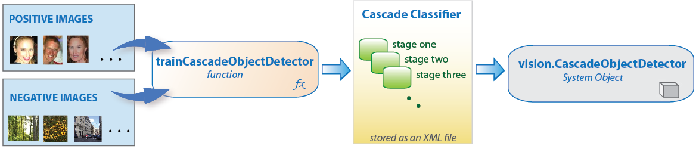
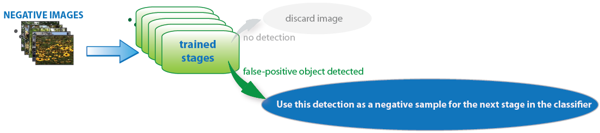
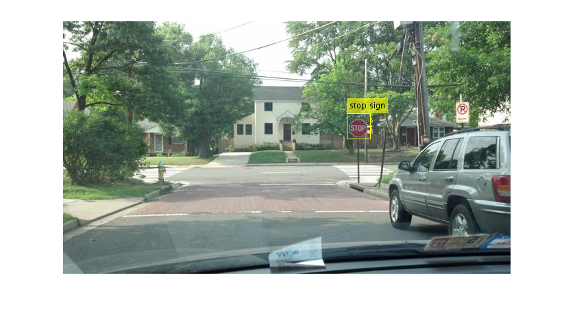

Codes for AUT Image Processing Workshop 2018
Lecture 7: Traingin Cascade Detectors in MATLAB
Taught by: Nima Mahmoudi -- nima_mahmoudi@aut.ac.ir, nmahmoud@ualberta.ca
This code is released under the GPLv3 license for non-commercial use only. For other types of license please contact me.
Contents
Some must-knows
We must be aware of different outcomes of a detector: * True Positive * False Positive * True Negative * False Negative

Keep in mind that you can train new detectors using Image Labeler App.

Initialize the Detector
Load the positive samples data from a MAT file. The file contains a table specifying bounding boxes for several object categories. The table was exported from the Training Image Labeler app.
Load positive samples.
load('stopSignsAndCars.mat');
Select the bounding boxes for stop signs from the table.
positiveInstances = stopSignsAndCars(:,1:2);
Add the image directory to the MATLAB path.
imDir = fullfile(matlabroot,'toolbox','vision','visiondata',... 'stopSignImages'); addpath(imDir);
Specify the foler for negative images.
negativeFolder = fullfile(matlabroot,'toolbox','vision','visiondata',... 'nonStopSigns');
Create an imageDatastore object containing negative images.
negativeImages = imageDatastore(negativeFolder);
Train a cascade object detector called 'stopSignDetector.xml' using HOG features. NOTE: The command can take several minutes to run.
trainCascadeObjectDetector('stopSignDetector.xml',positiveInstances, ... negativeFolder,'FalseAlarmRate',0.1,'NumCascadeStages',5);
Automatically setting ObjectTrainingSize to [ 35, 32 ] Using at most 42 of 42 positive samples per stage Using at most 84 negative samples per stage --cascadeParams-- Training stage 1 of 5 [........................................................................] Used 42 positive and 84 negative samples Time to train stage 1: 0 seconds Training stage 2 of 5 [........................................................................] Used 42 positive and 84 negative samples Time to train stage 2: 0 seconds Training stage 3 of 5 [........................................................................] Used 42 positive and 84 negative samples Time to train stage 3: 2 seconds Training stage 4 of 5 [........................................................................] Used 42 positive and 84 negative samples Time to train stage 4: 5 seconds Training stage 5 of 5 [........................................................................] Used 42 positive and 17 negative samples Time to train stage 5: 9 seconds Training complete
Use the newly trained classifier to detect a stop sign in an image.
detector = vision.CascadeObjectDetector('stopSignDetector.xml');
Read the test image.
img = imread('stopSignTest.jpg');
Detect a stop sign.
bbox = step(detector,img);
Insert bounding box rectangles and return the marked image.
detectedImg = insertObjectAnnotation(img,'rectangle',bbox,'stop sign');
Display the detected stop sign.
figure; imshow(detectedImg);
Remove the image directory from the path.
rmpath(imDir);